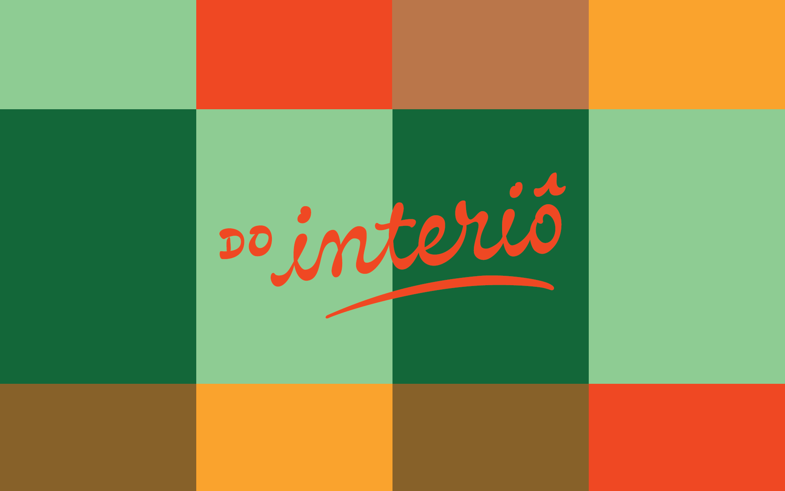
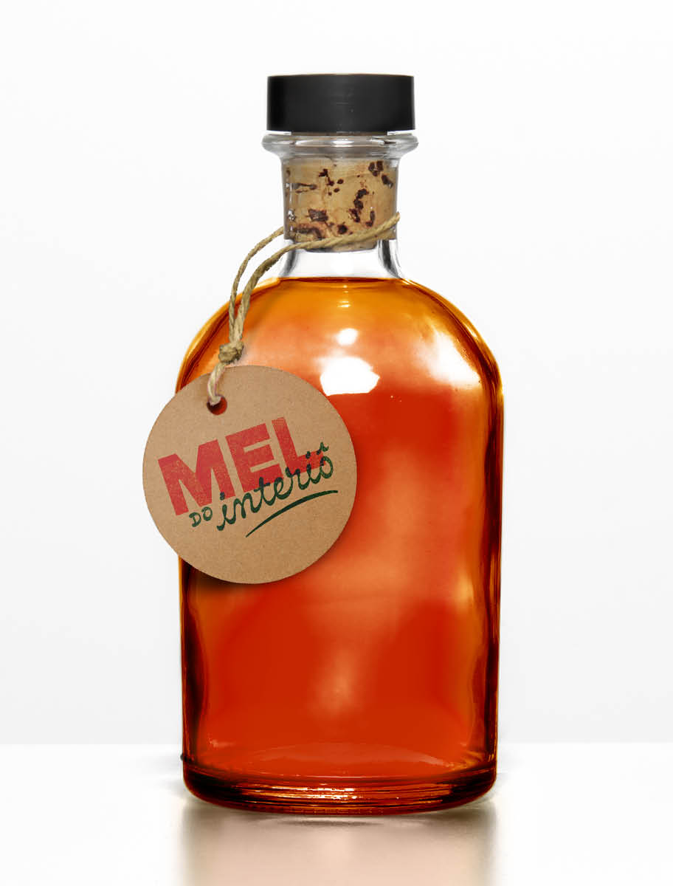
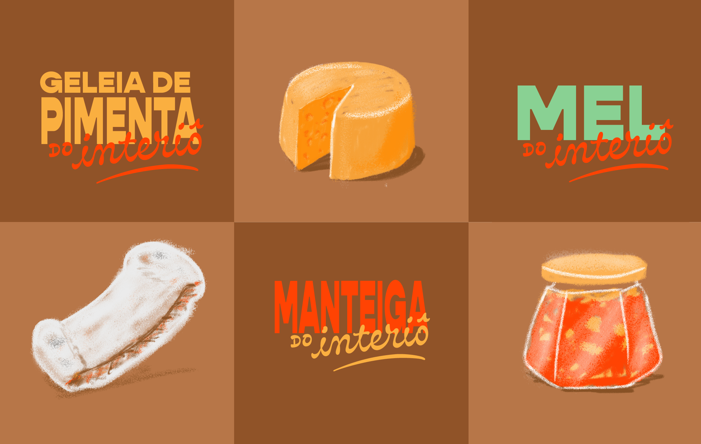
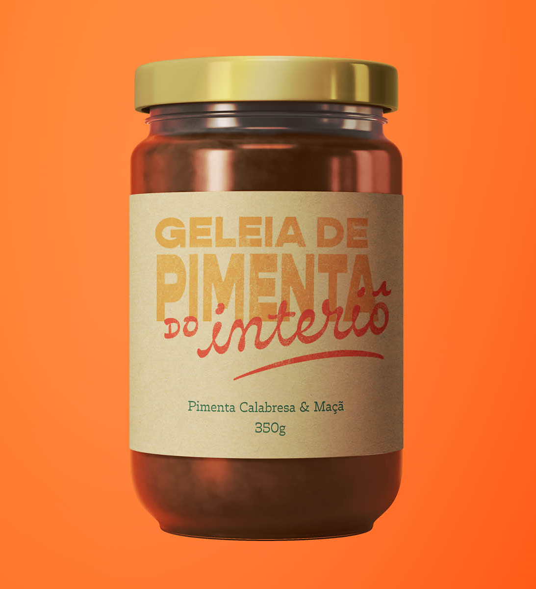
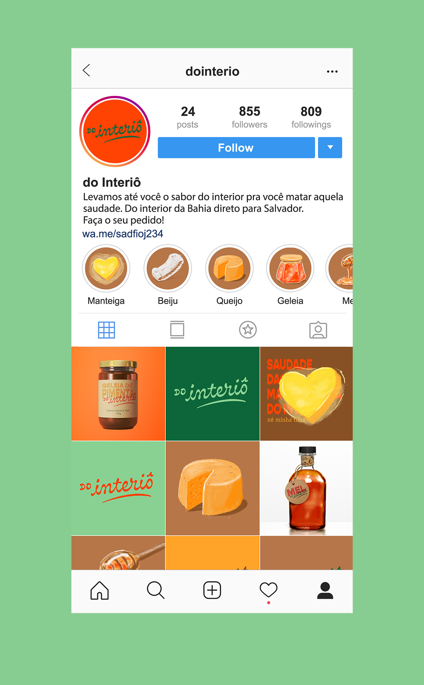
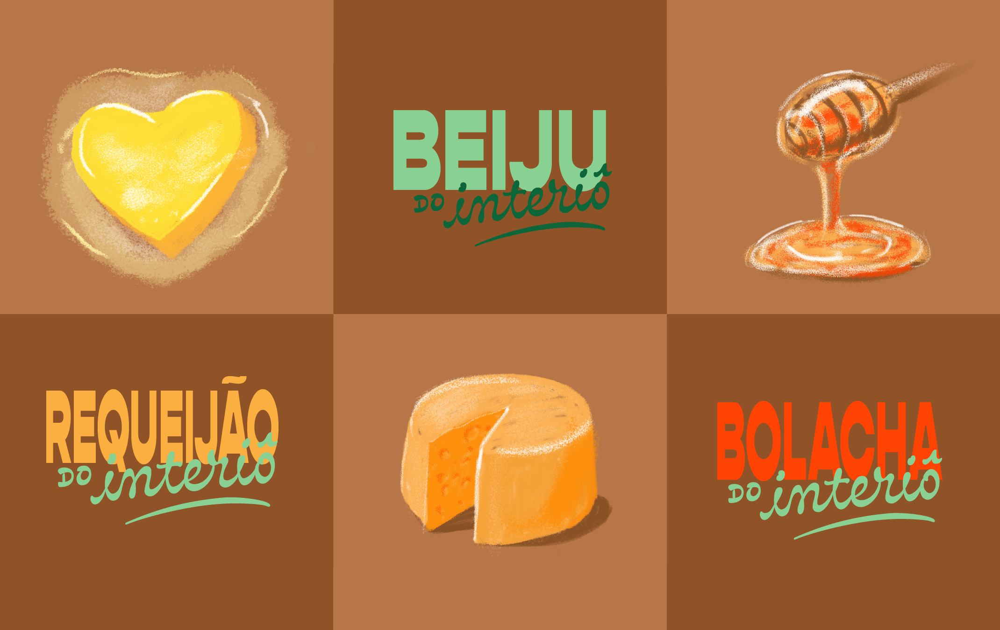
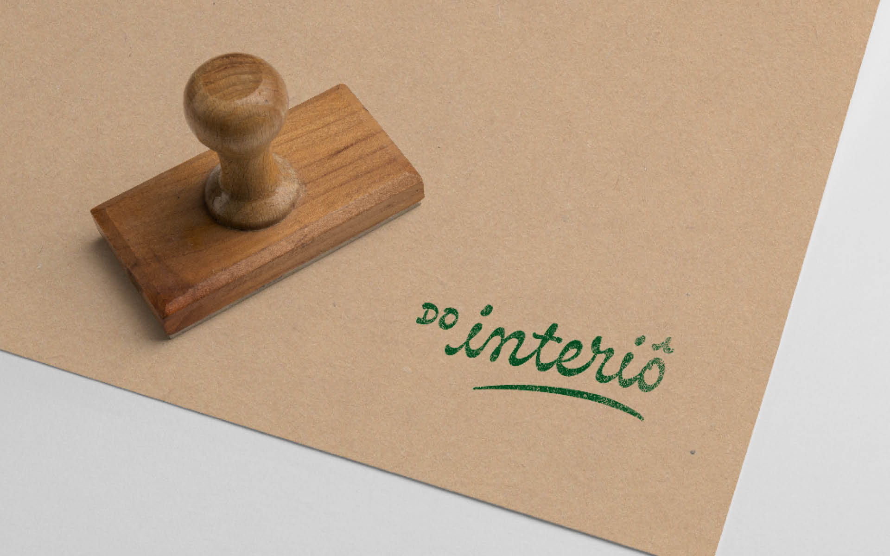
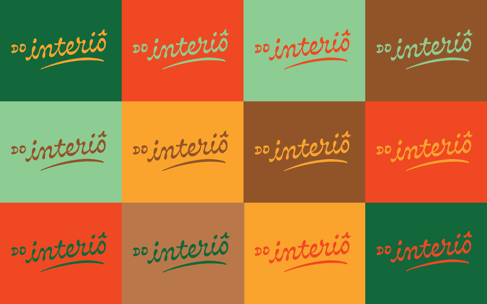

Quando a gente muda para a cidade grande em busca de oportunidades melhores, a saudade de casa começa a crescer. Para trazer um pouco a sensação de estar de volta, a do Interiô transporta o gosto de casa para a mesa dos apartamentos.
O logotipo foi desenhado para transmitir certa velocidade ao mesmo tempo que remete ao feito à mão, o contraste invertido das letras trazendo um pouco da roça. A fonte do nome dos produtos contrasta com o manuscrito, e é esticada e deformada, fazendo alusão a letreiros populares.
A paleta de cores traz os tons das plantações da fazenda, e o laranja e amarelo vêm para complementar os verdes e marrons.
PT / EN






